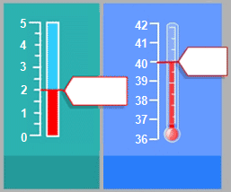

NAEQ2017
第二题 / 共四题
上一题
下一题
第二题：在炎热天气下跑步（共四题）
长距离跑步时，体温会升高并且出汗。 如果跑步者不饮用足够多的水以补充出汗造成的水分损失，他们会出现脱水症状。失水量达到或超过体重的2%就被认为是脱水状态。这一百分比标记在下图所示的失水标尺上。 如果体温升至40°C及以上，跑步者会出现危及生命的情况，即热休克。这一温度标记在下图所示的体温计上。

根据以下信息运行模拟，收集数据。从下拉菜单中进行选择，回答问题。
一名跑步者在干热（气温40°C， 空气湿度20%）的天气下跑步一小时，并且不饮水。
在这种条件下，跑步者会遭遇何种健康威胁？
跑步者会遭遇的健康威胁是
请选择
热休克
脱水
这是通过该跑步者跑步一小时后的
请选择
出汗量
失水量
体温
显示出来的
一名跑步者在湿热（气温35°C， 空气湿度60%）的天气下跑步一小时并且不饮水，他将有发生脱水和热休克的危险。
在跑步过程中饮水，对跑步者发生脱水和热休克的风险会有什么影响？
饮水会降低热休克的风险，但不会降低脱水的风险。
饮水会降低脱水的风险，但不会降低热休克的风险。
饮水会同时降低热休克和脱水的风险。
饮水既不会降低热休克的风险，也不会降低脱水的风险。
从表中选取两行数据支持你的答案。
当空气湿度为60%的时候，气温上升会对跑步一小时后的出汗量有何影响？
出汗量上升
出汗量下降
从表中选取两行数据支持你的答案。
这种影响的生物学原因是什么？
基于模拟，当空气湿度为40%时， 一个人跑步一小时不发生热休克的最高气温是多少？
20°C
25°C
30°C
35°C
40°C
从表中选取两行数据支持你的答案。
这种影响的生物学原因是什么？
此模拟允许你将空气湿度设置为20%、40%或60%。
你认为在空气湿度为50%、气温为40°C并可以饮水的条件下跑步安全还是不安全？
安全
不安全
从表中选取两行数据支持你的答案。
这种影响的生物学原因是什么？
出汗量（升）
失水量（%）

体温（℃）
气温（℃）
20
25
30
35
40
空气湿度（%）
20
40
60
饮水
是
否
气温（℃）
空气湿度（%）
饮水
出汗量（升）
失水量（%）
体温（℃）